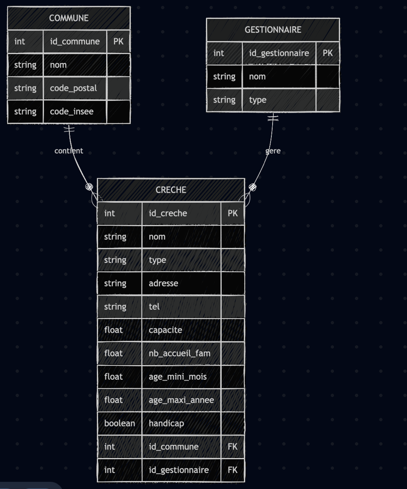
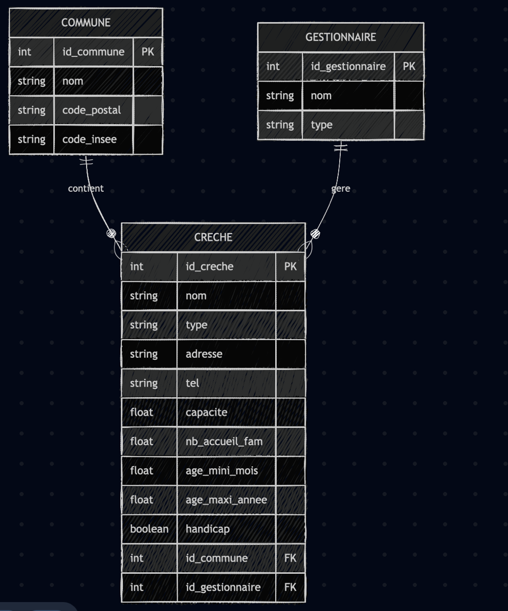

MODÉLISATION DES ÉTABLISSEMENTS DE LA PETITE ENFANCE
À partir d’un dataset open data sur les établissements de la petite enfance, une analyse a été réalisée pour identifier les entités principales (Crèche, Commune, Gestionnaire), leurs attributs et leurs relations ; un diagramme UML a été généré à l’aide d’un outil de modélisation automatisé (Mermaid) puis validé manuellement, et un modèle relationnel normalisé a été conçu pour structurer la base de données en mettant en évidence les clés primaires et étrangères, garantissant ainsi un schéma cohérent et évolutif.
 
